An ML Exploration of Utility Companies
by: Rishub Nahar
This project was an experiment in trying to use some basic machine learning techniques to create a trading strategy that performs better than random. This isn’t a coding or a math tutorial, it is an exploration of how we might be able to work with our data to make more accurate models. I will explain whatever math and code needed, but all you need is an interest to learn more about machine learning or trading strategies. With that, let’s get started !
Premise
We want to build a trading strategy that accurately tells us when to buy or sell stock of major Utility Companies in the S&P 500. The reason we are choosing the Utilities industry is because there is relatively little differentiation in business models and products across companies. As a result, I hypothesize that a similar set of factors are most influential for the majority of companies in this industry. In an industry like tech on the other hand, the big players each have their own specialization and set of services. Microsoft and Amazon for example, have many differences between their business models and core services, so it would be harder to train an effective model on the industry as a whole.
Getting Data
I retrieved the monthly data for 10 of the major utility companies in the S&P500 from 2000-2015. The data included 70 factors for each month including some common ones you’ve probably heard of like the PE and PEG ratios, as well as some more obscure metrics. I retrieved the data from the Wharton Research Database.
Prepping Data
In order to create an accurate model, we need to “teach” our program when to buy and when to sell. To do this we will train our program on a part of our data that we have labeled. When I say label, I mean for each month we are literally going to place a buy or sell signal 1 or 0 based off of the change in price in the next month. For example if the stock goes up 3% from the current month to the next month that means the current month will be labeled a buy : 1 . For example :
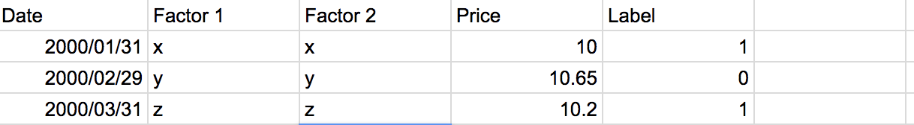Just keep in mind that the actual data set we have 70 different factors and a dozen or so companies. We will be storing all this labeled data in an output file simply named “outCopy.csv”
One thing is left before we start building models, we need to normalize our data. Currently you see that each factor is on a widely different scale. pe_op_basic fluctuates between 10 and 15 while bm really stays at around 1.1-1.4, meaning that even small changes in it are potentially a big deal. However, the computer just sees numbers and as a result may put undue weight on pe_op_basic as a factor in its prediction, simply because its numbers are larger. To avoid this we will subtract every value in each column by the minimum of that column and divide that value by the max of col - min col.
zi= (xi−min(x)) / (max(x)−min(x))
 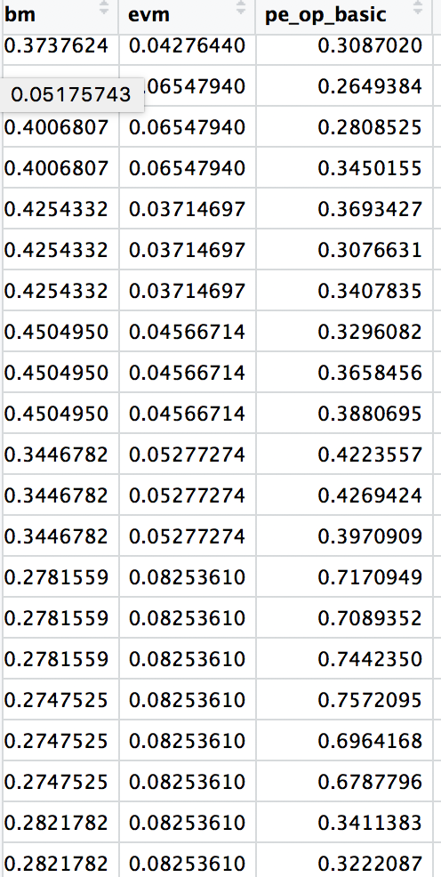
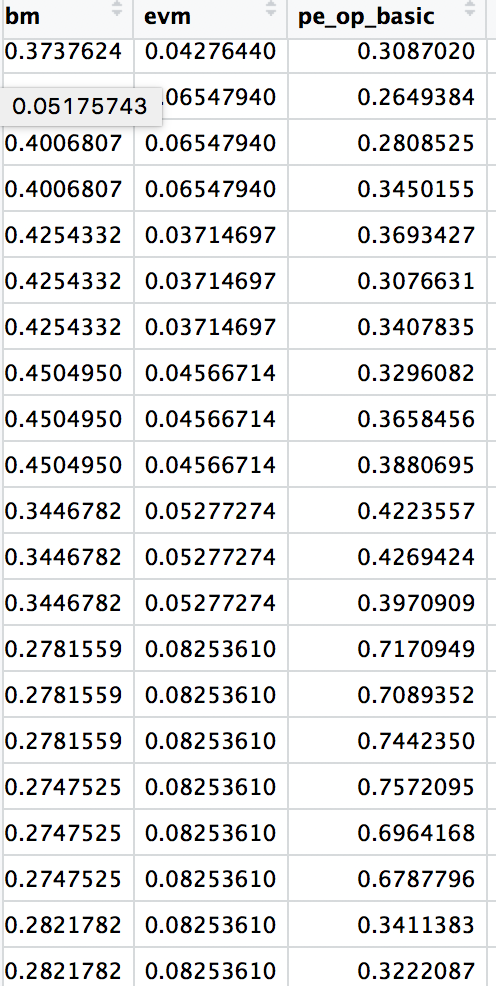
Taking data on right and normalizing it on a 0-1 scale (left) will allow our modell to optimize the parameters more accurately. This will also be very important when we conduct dimensionality reduction later on.
We are going to reserve the last 3 years of data we have as our test set. The years before we are going to do an 80:20 split to get our training and validation set. Our training set will as the name suggests "train" our model and tune the parameters. Our models that do the best on the validation, will then be backtested on our test set to see their profitability.
First Model
Finally we can start talking about our first model. We are faced with a binary classification problem. We want the computer to predict, based off the factors of that month, a buy signal (1) or a sell signal (0). Lets look in our toolbox. A linear regression wouldn’t make sense because it predicts continuous y values based on our x parameters. We want to in essence “cap” the regression so it can only predict a 0 or a 1.
To illustrate the difference between linear and logistic regression, let x be our vector of parameters (PEG ratio, PE ratio, etc) and ùõ≥ be the vector of weights for each of those parameters.
Linear Regression
- hùõ≥(x)=ùõ≥^Tx where hùõ≥(x) is some y value
Logistic Regression
- hùõ≥(x) = p(y=1 | x;ùõ≥) That is our value is the probability that y = 1 ( a buy in our case) given the factors x which have weights ùõ≥
- A logistic regression is the same as a linear regression except hùõ≥(x)= g(ùõ≥Tx) = g(x) where g is the sigmoid function 1/ (1 + e^-x)

We run the code and get the following results 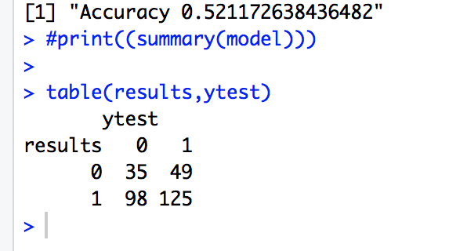
Not bad, after just 30 lines of code, our model is already predicting better than random. But don’t get your hopes up, all those 48% times where we make the wrong call is where we can lose big money. Plus it looks like our model is missing a lot of sell calls. 98 times we predicted a buy when it should have been a sell. Let’s try to push this thing and really see how accurate we can be.
Model 2 : Significant Factors
My concern is that of the 70 factors, a lot of them are just noise that are cluttering our model. If we can isolate the most useful factors and train our model off of those, perhaps we can get better results. With the handy summary command in r, we automatically get a list of all the factors and their p-values in our original model. P-value being the probability that the specific factor has a weight of zero and had no effect in the regression. The factors with low p-values <.05 are statistically significant and as a result have large coefficients or ùõ≥ values in the regression. We are going to be using only those statistically significant factors in our second regression 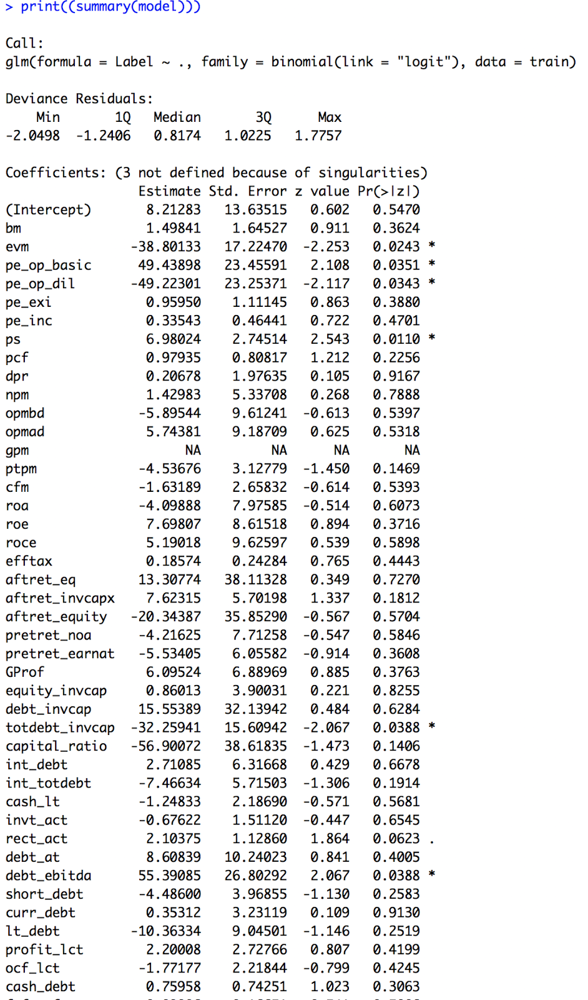
Before we run the original model on these significant factors, I would like to note something interesting. The factors that the model declared significant were as follows :
- Debt to EBITDA
- Earned Value Management
- Total Debt to Invested Capital
- Debt to Assets
- Long Term Debt : Equity
- Cash to Debt
- Debt to Assets
- Debt to Capital
- Price to Sales
- Price/Earnings to Growth
- Price to Earnings Basic
- Price to Earnings Diluted
- Asset Turnover Ratio
- % Monthly Change
Notice something interesting? Out of the 14 factors, 7 were debt related ratios. This is no coincidence. Utility companies must take on large amounts of debt because of the capital intensive nature of the industry. Thus, the companies that are able to utilize that debt efficiently, position themselves for strong growth in their equity prices. This is pretty cool. With no fundamental knowledge of this industry before hand, our model, as simple as it is, was able to detect this industry insight. Of course I’m not saying that our model is in anyway a replacement for solid industry research. It is however a data driven way for us to create and confirm hypothesis about the industry.
When we run our original model just on these significant factors we get : 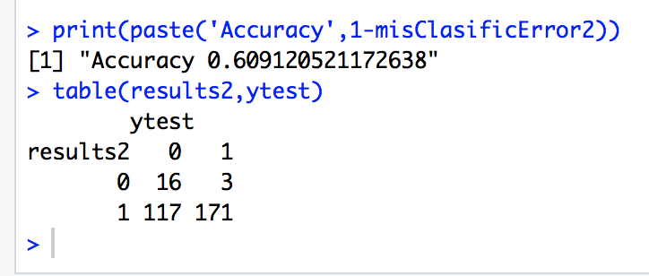
So our accuracy actually shot up a good bit. The thing that concerns me though is that if you look at it closely, our model is pretty much just predicting buy, 94% of the time to be exact. That’s not much different from a long only strategy. I’m not content with this, so lets try another strategy for dimensionality reduction
Model 3 : Principal Component Analysis (PCA)
If you’re unfamiliar or rusty with PCA, no worries. I’ll go over the intuition.
PCA is a powerful dimensionality reduction tool where essentially we project our data into a lower dimensional subspace, while minimizing the perpendicular squared errors.

Source : NLPCA
Take this for example. We have all this data on the left in a 3 dimensional space. But really, you will notice that much of the data is clustered around a plane. And if you project the data on that plane as shown in the right, you get the general idea of the data.
Mathematically speaking, PCA takes potentially correlated variables and make uncorrelated orthogonal components
The benefit is that we are able to retain the vast majority of relevant information (variance) in the data, while using fewer dimensions. When we conduct PCA on our data, we see how much cumulative variance each principal component accounts for. 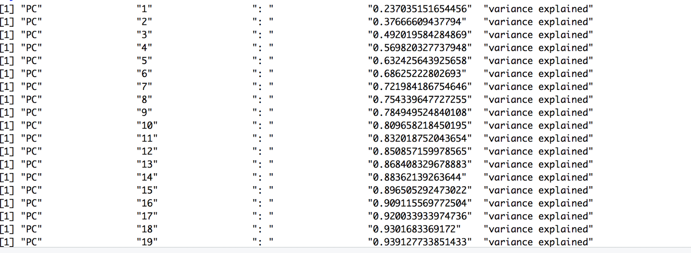
The graph below shows that the first couple of principle components do an excellent job at capturing variance. We’d like to capture at least 95% of the variance in the data set, so we will use the first 21 components, effectively meaning we’ve reduced our dimensionality from 70-21. Hopefully by doing so, we have reduced noise and collinearities or redundancies in our data.

When we run the original model on the first 21 components we get : 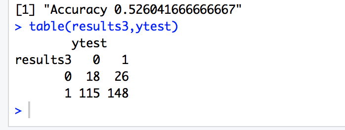
With PCA, our model is about as accurate it originally was. However, it is much worse than before at predicting sell signals.
I wonder. Perhaps a binary classification between buy and sell is not enough. Perhaps introducing a hold signal would be useful. My thought is if our program only learns from the best examples of buy or sell, those where the price fluctuates greatly, then it will be able to produce better predictions. For example, right now if the price of a stock goes up by .1% vs down by .1%, how much of a difference is there really in the factors? Probably not much. Between a 5% up vs a 5% down, there is probably a more substantial difference, and we want our model to focus on that.
Model 4 : Linear Discriminant Analysis (LDA)
We are going to move away from binary classification by using Linear Discriminant Analysis, a second dimensionality reduction technique that might help us out
You can think of LDA as a supervised clustering algorithm of sorts. The LDA is similar to the PCA in that it is meant to project data onto a lower dimensional subspace. However, instead of trying to minimize perpendicular squared errors, we are trying to form distinct groups of the data where we maximize the space between the groups’ means and minimize the variation within each group. Essentially, we are trying to make tight and well separated clusters of our data. 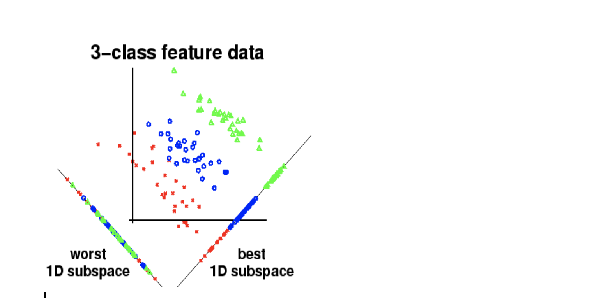
This is a good idea of what’s going on. In both the left and the right line, the 2D data is being projected onto a lower 1 dimensional subspace. The left line however, has groupings that are all mixed together and is therefore a bad choice. The right line has clearly separated groups. This way, in the future, given a set of factors we can project that data onto either the red blue or green part of the line and predict the corresponding category for that data. It’s just instead of red blue green we are doing buy, sell, hold.
To make sure we are giving our computer only the very best examples of a buy and sell label. I made a modification to our processing script so that it labels a month a buy only if the next month moves up in price in a magnitude that is greater than the average price increase has been up until that point. I did the same for sells, and the rest of the times when the stock doesn't move enough, I labeled the month as a hold.
When we run this new model, (note: this is no longer a logistic regression) we get: 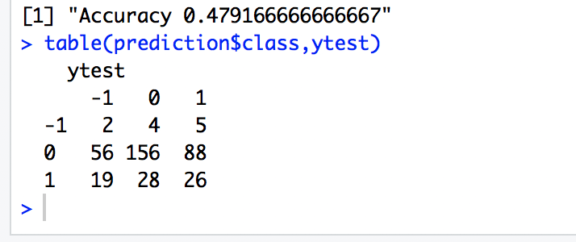
Uhh, our model is really only predicting holds. I thought about this for a bit and I guess we were a little too harsh in our standards of labeling what is a buy and what is a sell. As such, most of our labels in our training data were holds, and our model probably just didn’t get to train on enough examples of buys and sells. When I relabled with looser standards we were getting a similar accuracy, it's just that then the model was back to the problem of really only predicting buys signals. Let’s look into why this may be the case. The figure below shows the clusters of buys (1), sells (-1), and holds (0) that our model generated. 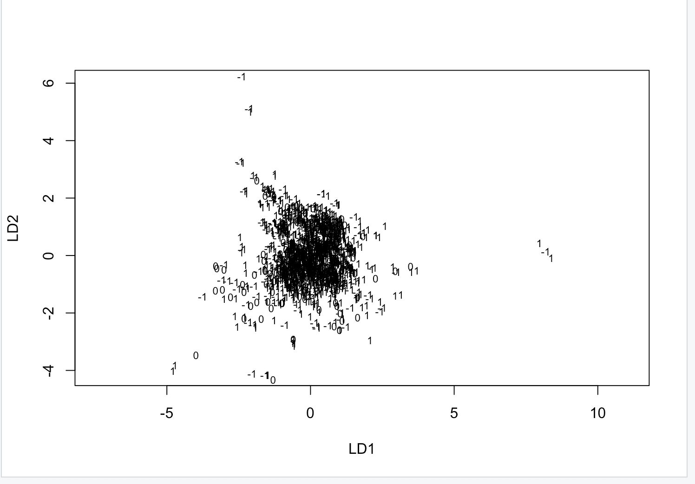
As you can see our LDA was utterly ineffective in projecting our data. Instead of well demarcated clusters, we just got a mess, suggesting there is simply too much noise to make a clean linear classification.
Hmmmm. Linear Classification. That has been the one common theme of all our models so far. I wonder perhaps if there is a non linear relationship in our data. If so how would we capture it?
Model 5 : Neural Network
A neural network is a way for us to capture non linear relationships in our data. I built one with the Keras library. Ultimately it was utterly unsuccessful and only predicted sell signals. I’m far from an expert in neural networks, but after building some rough models I really doubt that there is any meaningful non linear relationship in our data. Because of this I’m actually not going to explain how I built it right now. The explanation is a bit involved. If you are curious I’ll link a write up I made about it in the appendix, but for now let’s start testing our strategies and see if we can make some money!
Backtesting
Backtesting is the process by which we are going to test our strategy on historical data. I created a script to handle the process for us and we will backtest against the last 3 years of historical data we have. For the first backtest, I’m going to test our strategy for each company against a random and long only strategy (one where we buy at the beginning and just hold for the entire period). I’m testing our second strategy (where we used only significant factors) because it had the highest accuracy on the validation set. The backtest was conducted with $10,000 starting for each company. The average returns across all companies were then calculated. 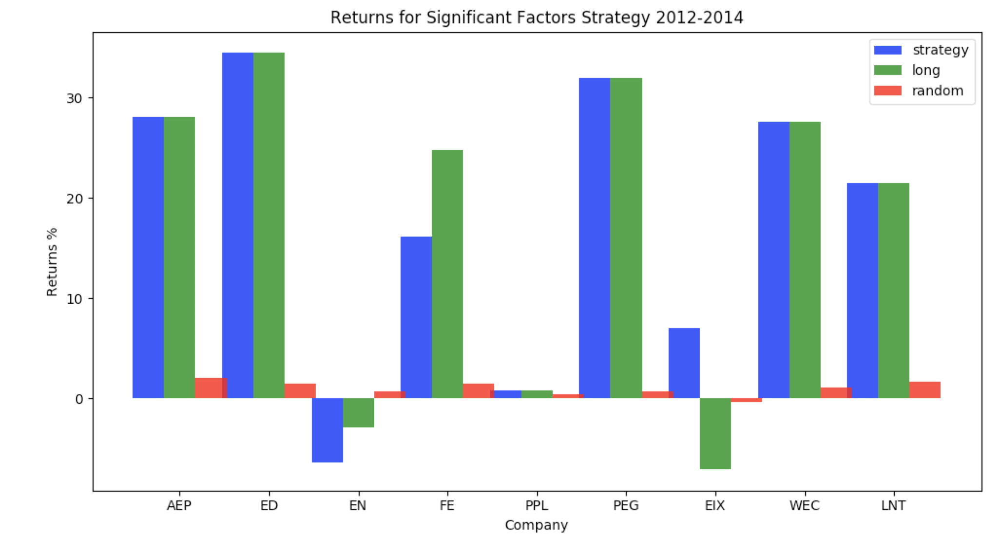
Alright so as shown by the graph, in almost all cases, our strategy soundly beat random. It was on par with long only, though this was to be expected since we were mostly just predicting buy signals anyways.
- AVERAGE STRAT RETURN: 21.65 %
- AVERAGE LONG RETURN: 22.15%
- AVERAGE RANDOM RETURN: 0.65 %
- AVERAGE PERFECT RETURN: 139.04 %
- SHARPE RATIO: .43
This shows just how close the two strategies are 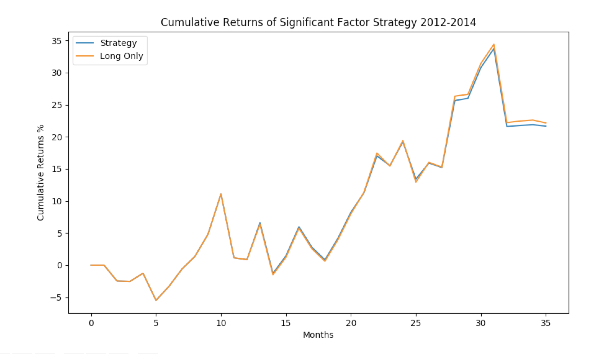
I'm interested in seeing if we can get more alpha by using our original strategy, which predicted more sells. 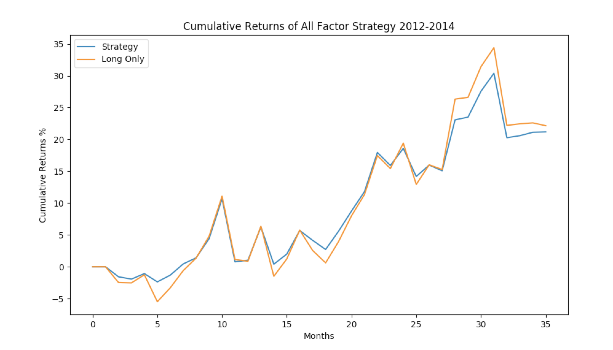
Unfortunately, this strategy didn't make much of a difference. Although our Shapre Ratio improved a bit to .53. Does that mean our model is completely useless. Well not exactly. Lets say we backtest over the entire time period. I know this isn't realistic given that we are testing on data we trained on, but we might get some insights about our data.

You'll notice that while our strategy does get beat during periods of growth, it does a good job hedging against losses during periods of contraction, most noteably 2001-2002 and 2008. Returns looked like this over the entire time span:
- AVERAGE STRAT RETURN: 301.43 %
- AVERAGE LONG RETURN: 138.59 %
- AVERAGE PERFECT RETURN: 13224.09 %
- SHARPE RATIO: .79
This got me thinking, what if we longed during bull markets and deployed our strategy only during bear markets. Maybe this best of both worlds approach will lead us to greater returns.
I ran a version of the backtest which employed our strategy only during the years 2001,2002, and 2008. Sure enough, it achieved an ROI of 318.04 % over the time span, 17% higher than what our strategy alone generated.
Again, I realize it is unrealistic to test against data that we have trained on, however this graph shows that our strategy can perhaps be useful to deploy during bear markets.
Moving Forward
Throughout this whole process, creating more complicated models did not yield better returns. This means that the only way from here for us to push our alpha generation further is for us to come up with different factors that might have a large impact on the industry. For this, one needs to some good old fashioned industry research. Right now I think that interest rates might be worth looking into. We already discovered that debt is a very important metric for this industry. Surely interest rates, which govern how onerous that debt is, would have an effect on price movements. I’ll write in an update when I plug interest rates into the model. In the future I could pick a different test measure than just accuracy. Sharpe Ratio might be a good one for example. Also, I could adjust the threshold of probabilities needed to return a buy signal. Right now we return buy if the probability is greater than .5.